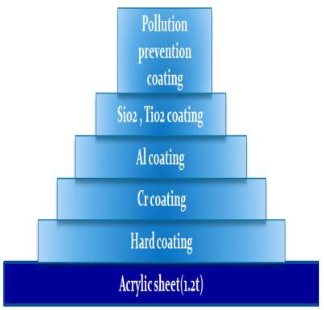
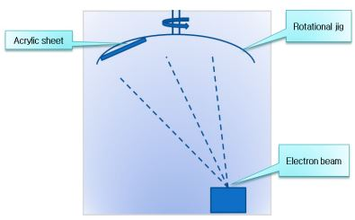

반사경의 반사율을 높이기 위하여 여러 방법을 씁니다.
그 중 하나는 알루미늄 코팅면 위에 이산화티타늄(TiO2)이나 삼산화알루미늄(Al2O3)같은 물질을 여러 층으로 코팅하는 방법인데, 이를 보통 'Enhanced Aluminium Coating'이라고 부릅니다(알루미늄 코팅 위에 유전체 막을 몇 층 덧씌우는 방법임). 이 방법을 쓰면 거울의 반사율을 95~97%까지 끌어올릴 수 있으므로, 흔히 쓰는 코팅인 Protected Aluminium Coating 보다는 빛 손실을 크게 줄일 수 있습니다. 이 방법은 일부 망원경 제조회사에서 실제로 주경과 부경의 코팅에 이용하고 있습니다3).
또 다른 해결책으로는 유전체를 이용하여 코팅을 하는 것인데요, 유전체 코팅 처리를 한 거울을 '유전체 거울(dielectric mirror)'이라고 부릅니다. 유전체 거울은 가장 뛰어난 성능을 가진 거울 가운데 하나로, 99% 이상의 매우 높은 반사율을 보여줍니다. 낮은 반사율로 인한 빛의 손실을 최소화할 수 있고, 반사면의 내구성도 알루미늄 거울보다 훨씬 뛰어나므로 반사망원경의 재료로는 이상적이지요. 다만 이 종류의 거울을 채용한 망원경은 극히 드물어서 시중에서 구하기가 어렵고, 가격도 비싸다는 문제가 있습니다. 빛 손실을 충분히 보상할 수 있을 만큼 더 큰 구경의 망원경을 구하는 것이 비용이나 시간 측면에서 더 유리한 상황이죠. 다만 최근들어서 비교적 저렴한 가격에 유전체 거울을 쓴 천정미러가 시판되고 있는 것으로 보아 망원경의 주경과 부경 모두에 유전체 거울을 채용하는 망원경이 좀 더 보급화되리라는 기대를 가질 수는 있습니다.
[각주]----
3) 현재 셀레스트론(Celestron)사의 'StarBright XLT', 미드(Meade)사의 'UHTC' 적용 제품에는 반사경 코팅에 Enhanced Aluminium Coating을 쓰고 있습니다. 이들 제품은 기존의 반사망원경에 비해 약 15% 높은 빛 투과율을 보여줍니다. 각사에서 공개한 자료로 보면 StarBright XLT보다는 UHTC 쪽이 약간 더 우수해 보입니다.
모재로 사용하는 아크릴은 판 위에 평탄도를 맞추기위해 경도 3H의 flow 코팅으로 하드 코팅을 수행한다. 이는 모재와 코팅 막의 부착성을 좋게 하기 위한 것이다. 코팅되지 않은 아크릴 모재의 경우 탈막 현상이 발생하므로 하드 코팅을 통하여 이를 방지해야만 한다. 코팅 막의 성능은 모재 표면인 아크릴의 특성에 따라 많이 달라진다. 따라서 표면이 단단하고 매끄러울수록 좋은 품질의 코팅 막을 성막 할 수 있다.
다음으로 하드 코팅을 한 후에 400 Å으로 크롬(Cr)을 증착한다. 크롬을 증착하는 이유는 하드 코팅막과 알루미늄 코팅 막의 부착력을 증가시키기 위함이다. 이러한 기능의 코팅 막을 접합 층(bonding layer)라고 한다.
크롬 코팅 후 반사판 주 재료인 1200Å의 알루미늄을 코팅한다. 이때 일반 상업용 알루미늄의 경우 표면이 거칠기 때문에 본 연구에서는 매끄러운 광학용 알루미늄을 사용하였다.
그 후에 120Å SiO2, TiO2를 도포한다. 이는 알루미늄 코팅 막의 산화를 방지하기 위해서 금속산화물을 코팅한다. 알루미늄은 산소와 결합하여 산화작용을 하므로 이를 방지하기 위하여 SiO2를 도포한다. 또한 SiO2, TiO2의 두 가지 약품을 적절한 두께로 교대로 증착을 시행하면 어느 정도 반사율을 향상시킬 수 있다.
마지막으로 알루미늄 코팅이 벗겨지는 것과 이물질이 묻을 수 있으므로 이를 방지하기 위하여 오염 방지 코팅인 발수 코팅을 수행한다.

